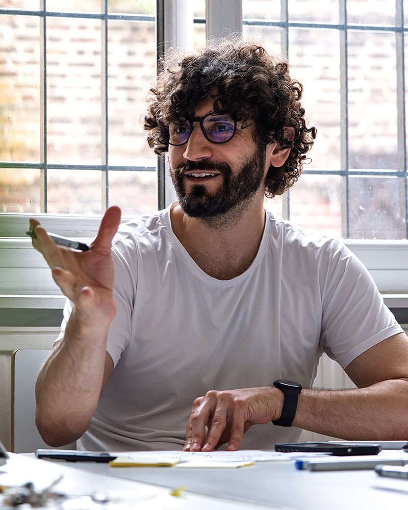

Design Manager · Industrial Design
Team Leadership · Client & Supplier Management · Project Delivery
Available for part-time & interim engagementsIndustrial designer and design studio founder with 12+ years leading multidisciplinary teams from concept through mass production. A decade running Makers Department sits alongside managing a global dealership rollout for McLaren Automotive and lecturing in creative project management at Kingston University. Comfortable owning both the commercial side of a project — client negotiation, budgets, contracts, risk and liability — and the creative one: DFM, certifications, and design rights and patents. Equally experienced building, hiring and training design teams. I offer part-time and interim support to design studios that need hands-on team management, design mentorship, or senior oversight of project delivery, backed by a network of vetted suppliers and freelancers built over 12+ years.
End-to-End Industrial Design
Concept to manufacturing, end to end.
Design & Project Manager
Coordinating designers, engineers, suppliers and clients on-brief and on schedule.
Supply Chain Sourcing
Supplier relationships and production oversight through an established network.
Makers Department | London, United Kingdom & Lisbon, Portugal
- Founded and built an industrial design consultancy, hiring, managing and mentoring an in-house team, for clients including McLaren Automotive, Joseph Joseph and Unilever, and startups including Valkyrie Industries, Sensate and Flowbio.
- Set and held quality standards across every project, linking client, design team, engineers and manufacturing partners through an established Portuguese network.
- Owned the commercial side of client relationships — negotiation, budgets, risk/liability — and advised on DFM, certifications and IP strategy.
Hyphen Design Ltd | Client: McLaren Automotive | Concurrent engagement
- Joined as Junior Industrial Designer, working on high-end client work including Bosch Appliances, McLaren and TangleTeezer; progressed to Operations Manager on McLaren's dealership configuration tools programme.
- Ran supplier coordination, budgets and production oversight, delivering tools to 100+ dealerships worldwide, then continued as a retained consultant.
Kingston University | Part-time
- Trained design, art direction and marketing students in project management and design thinking, guiding teams through live briefs with clients including Gov.uk and the BBC.
Innotrend Ltd, trading as PurePods | Self-employed | Greater London, United Kingdom
- Designed and engineered water-filtering products, managing overseas manufacturing partners through prototyping and scale-up.
- Ran day-to-day operations: sales channels, inventory, customer service and marketing.
Freelance | London, United Kingdom
- Delivered independent design work for international clients, including multi-year support to Magnitone and packaging development for Re-Cleanse.
- Worked within a small engineering team on the UK's first self-balancing personal transport product.
Earlier: Product Design Intern, Paul Cocksedge Studio (2012–2013); Exhibition Assistant, MUDE Lisboa (2010–2011).
Design Degree (Licenciatura), Industrial and Product Design
Universidade Técnica de Lisboa, 2008–2011
SolidWorks 3D CAD — Level B (Advanced)
2010
Portuguese (Native)
English (Full Professional Proficiency)
Spanish (Proficient)
French (Elementary)